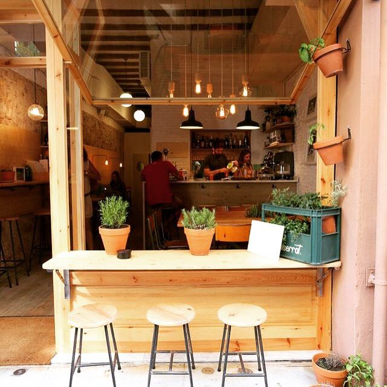

Solume Coffee nació del sueño compartido de tres hermanas: Sofía, Lucía y Melanie, quienes combinaron sus nombres para crear una marca única. Inspiradas por su amor por el buen café y su deseo de crear un espacio acogedor y amigable para todos, imaginaron un lugar donde cada taza sea una experiencia especial. Desde nuestros inicios, hemos trabajado con dedicación para seleccionar los mejores granos y perfeccionar cada preparación, siempre con el objetivo de compartir nuestra pasión con cada persona que nos visita. Nuestro sueño no se queda aquí: queremos que Solume Coffee se convierta en un referente internacional, llevando el sabor y la calidez de nuestro café a cada rincón del mundo.
Solume comenzó con un pequeño local en la ciudad, armado con esfuerzo familiar y muchas ganas de crecer. Fue el primer paso de un proyecto pensado para convertirse en algo grande, manteniendo siempre la esencia cercana y artesanal que nos identifica.

En Solume Coffee, amamos a los animales tanto como al buen café. Por eso, nuestro espacio es exclusivamente pet friendly, pensado para que disfrutes tu bebida favorita en compañía de tu mascota.

Podés encontrarnos en nuestro exclusivo Rooftop en Playa Varese, un espacio único donde el aroma del café se mezcla con la brisa del mar. Disfrutá de una experiencia diferente mientras contemplás la vista panorámica y compartís momentos especiales con una taza de nuestro café de especialidad.